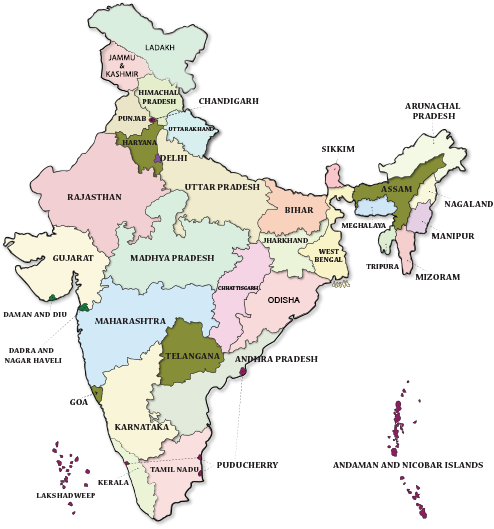

New Farm Bill is a proposal of the government which is not only opposed by the opposition, but also opposed by the 25 years long-lasting friend of BJP, the Akali Dal. There are three points in these reforms: Farmers can store the food grains and can sell them when ever they want. Companies and farmers can trade with each other directly. No need to sell the agricultural product only in mandis. Companies can also make a direct agreement with farmers and can do contract farming.
Free and Fair market where farmers can decide their own price and sell to a popular online platforms are already in the process as pointed out by my fellow Quorans should be promoted more aggressively by Policy makers assisted by the huge entrepreneurial community for transparency and efficiency.
The answer is FPO (FARMER PRODUCER ORGANISATION). By the communicate with farmer we tell to them they buy the products in bulk purchasing in results the will get good variety as well as quality and also the cost of purchasing is less that's why reduce the input cost.
Don't waste food because farmers take lot of trouble to grow that food. Don't bargain too much when a farmer is selling the product in market it's demotivate them . Instead of purchasing products in bigbazar and reliance fresh go purchase in local market where farmers came to earn their livelihood daily.
India's farmers started getting empowered from the 1950s. The first, and game changing, step was abolition of zamindari and re-distribution of land to cultivators. The second game changer was providing access to finance by PSU banks, starting from 1969. Around that time, we developed the high yield seeds which raised agriculture productivity by many times. And most of the major crops are supported by pricing floors.
The farmers are following and as usual preserving the culture and tradition of the country. They are still following old age technics for farming this is leading to low yield. They didn't aware about the marketing technique and not getting the help at required time. Every one people who involve the helping ( like providing the input or getting the output) they only loot the farmer. They are lacking in maintaining the farm records, in this case they bankers are not in the position to provide a large investment for them.
The most obvious answers for the current situation of farmers in India: 1.Lack of education and Technology 2. Medium and small scale land holdings 3. Natural disasters Apart from these, this is one thing we always don't consider. In the past 20 years, the output price has remained static whereas input prices has been soaring.
The entire society is suffering from low productivity, poor quality, adulteration, kamchori, rent seeking , corruption and copying from west Do you think industrial and babudom productivity is good ? Workers are part time or migratory Physically also not as strong as western population Mechanisation is low since limited budget is plunderd by crony capitalists politicians criminlas and babus(police included) Not ony that , our 50% farmers still depend on monsoon.India either faces floods or drought even today We are still importing fertilisers after closing most central govt plants Seeds pesticides and fertilisers all are slowly going in hands of MNCs
Agriculture is about 18% at real GDP calculation by using GDP deflator. Agriculture, Forestry and Fishing 5.1 Quarterly GVA at Basic Prices for Q1 2019-20 from ‘Agriculture, Forestry and Fishing’ sector grew by 2.0 percent as compared to growth of 5.1 percent in Q1 2018-19. The crops including fruits and vegetables account for about 53 percent, the livestock products 32 percent and forestry & fisheries 15 percent share of GVA in ‘Agriculture, Forestry and Fishing’ sector.
|
 |
Download AAKRUTI app for Android And IOS Mobile Phone


Our Vision, Is To Promote the Feeling Of Indianess and support Mahatma Gandhi's Vision Of Swadeshi
Copyright © 2020 -Team Annadat